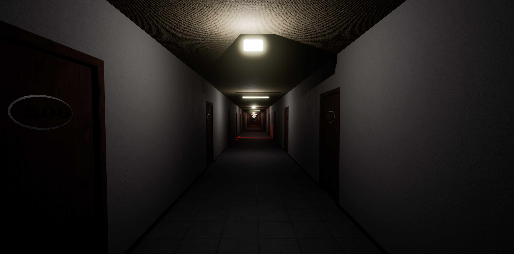
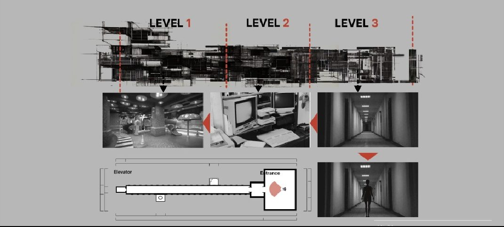
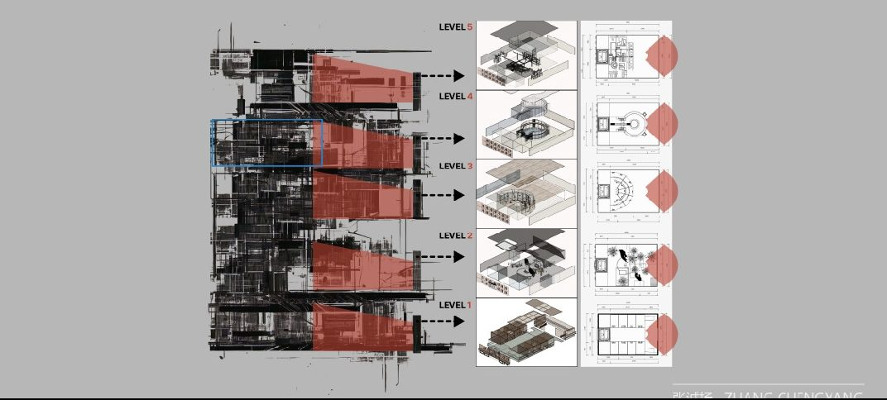
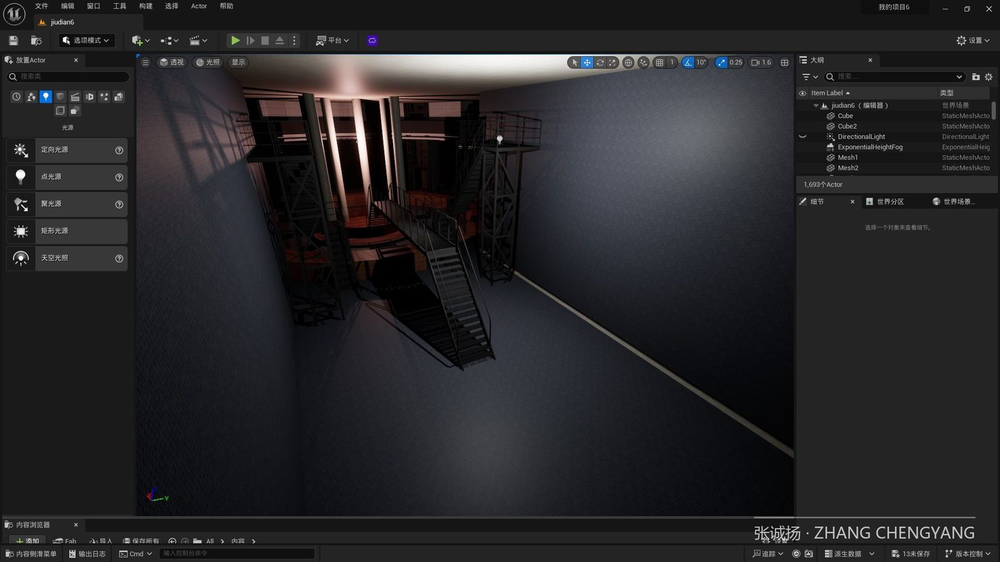
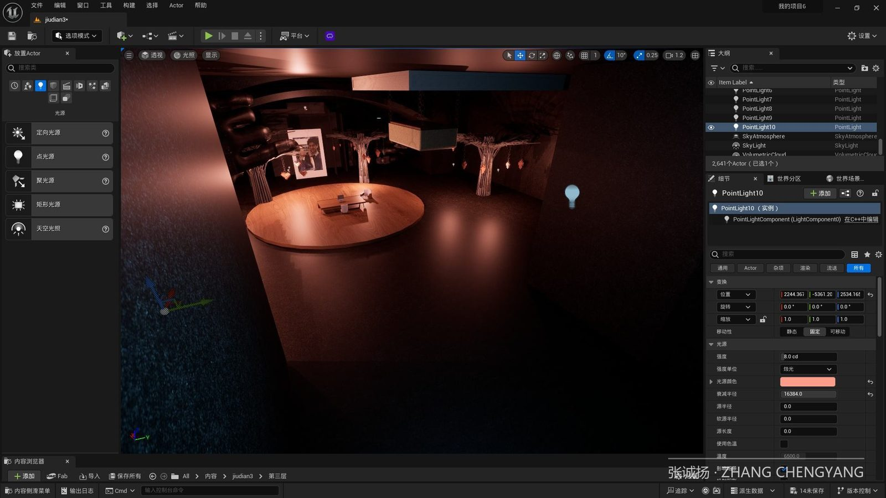
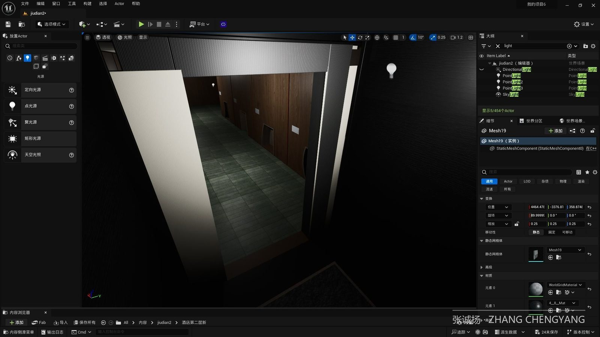
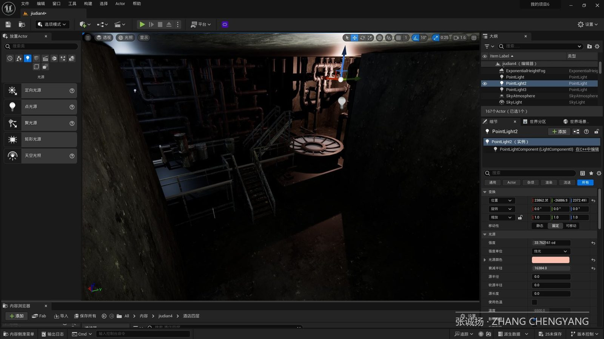
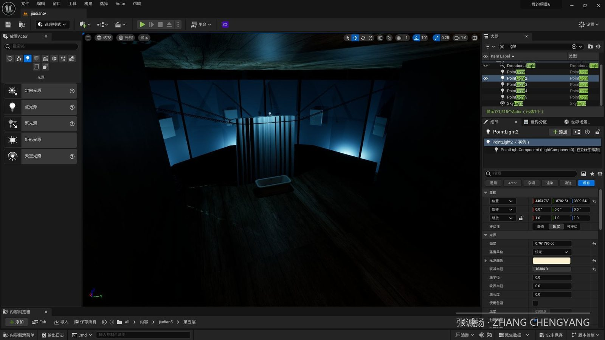
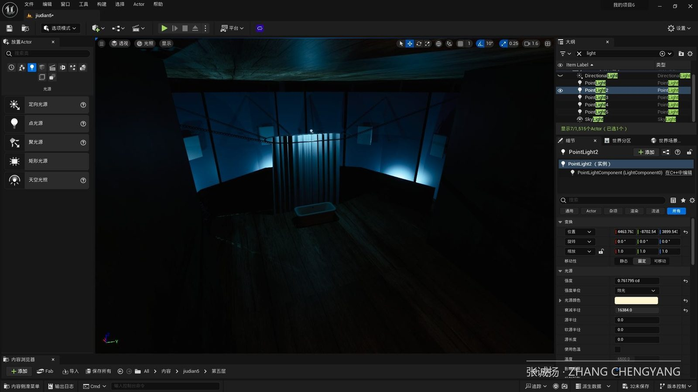

虚拟叙事 / Unreal Engine
无尽回廊
ENDLESS CORRIDOR

PROJECT 02 · 团队项目
无尽回廊
ENDLESS CORRIDOR
一款以 Elisa Lam 事件为背景的虚拟现实叙事游戏，以双相情感障碍为切入点。玩家可以沉浸式地体验当时发生的一切，并与场景中的物品互动以获取线索。
我想通过这个项目呼吁大家平等对待精神疾病患者——我们眼中所谓的「异常」，或许正是他们内心的美。
双重视角叙事

ELISA'S VIEW · 患者的内心
Elisa Lam 的视角
走廊里充满了重复的房间，暗示着患者被困在自己的内心世界中，无法脱身。情绪容易波动，幻觉也时有出现——用空间本身讲述精神困境。

OUTSIDER'S VIEW · 世界的旁观
旁观者视角
玩家戴上 VR 眼镜后，可以自由查看视角，观看电梯外的场景。旁观者与亲历者，在同一空间里看见完全不同的世界。
UE5 场景与交互编程






叙事内核
我们眼中所谓的「异常」，或许正是他们内心的美。重复的房间、熄灭的灯光、闪烁的按钮——每一个设计都在让玩家理解：精神疾病患者被困在怎样的世界里。
EMPATHY BY DESIGN — 用 VR 建立对精神疾病患者的同理心